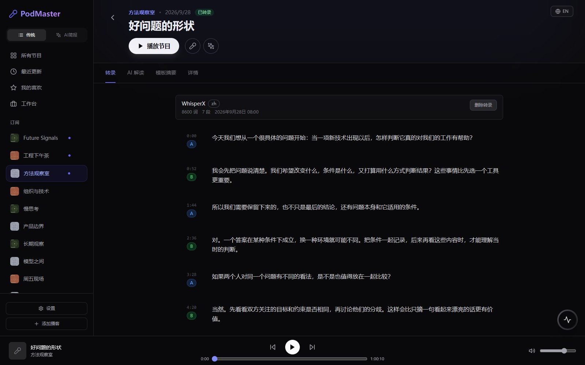
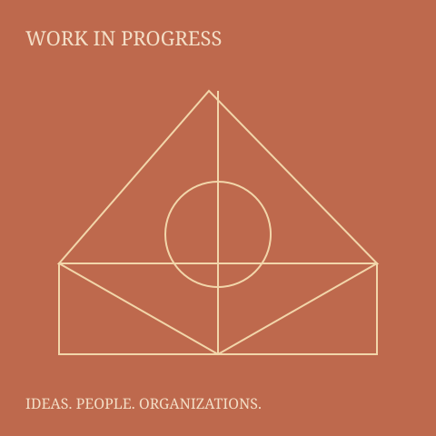

先订阅，再好好听。
一个链接，把 RSS 播客、YouTube 频道或 B 站 UP 主放进订阅库。看看谁更新了，打开一期节目，边听边读文稿。
- 最近更新 · 未查看订阅源提示
- 播放暂停 · 拖动进度 · 快进后退 · 音量
- 喜欢的节目 · 转录文稿 · 个人收听进度
给听见的好观点，一个去处
粘贴 RSS、YouTube 频道或 B 站 UP 主链接，订阅、追更新、听播客、读文稿。再用 AI 留下单篇解读，把观点串成自己的周报与月报。

02 / AI 解读与简报
工具的价值，
取决于人的判断。
TWO WAYS INTO THE SAME LIBRARY
日常用它订阅和收听，
需要深入时，用它理解与整理。
一个链接，把 RSS 播客、YouTube 频道或 B 站 UP 主放进订阅库。看看谁更新了，打开一期节目，边听边读文稿。
逐篇理解完整文稿，保存摘要、议题、新词和原话。再围绕你关心的问题，复用它们生成周报与月报。
两个视角共享订阅、文稿和已保存的单篇分析。分析一次，单篇、周报、月报继续复用。
A LITTLE HANDS-ON EXPERIMENT
两个视角，都可以动手试。使用演示数据；订阅仅在此页预览，播放进度为模拟。
快速订阅
粘贴 RSS、YouTube 频道或 B 站 UP 主地址。应用自动识别来源，后台同步节目。

模拟进度 · 不播放音频
2026.09.21 — 09.27 / 周报
点开「原话依据」试试：卡片支持左右切换，也可以用鼠标拖动或在手机上横滑。
INSIDE PODMASTER
来自应用的界面截图，使用演示数据。
点击图片，可以放大查看细节。
用链接快速订阅，在最近更新里集中查看 RSS、YouTube 与 B 站的新节目。
内容库可以共享；已读、喜欢和收听进度，按用户各自保留。
查看原话与完整文稿；有时间信息时，可以回到节目继续听。
跨周期收藏值得记住的观点，也能导出完整 PDF，让内容与出处一起留下。
YOUR NEXT GOOD IDEA IS ALREADY OUT THERE
从你喜欢的几个订阅开始，让内容库慢慢变得更有用。